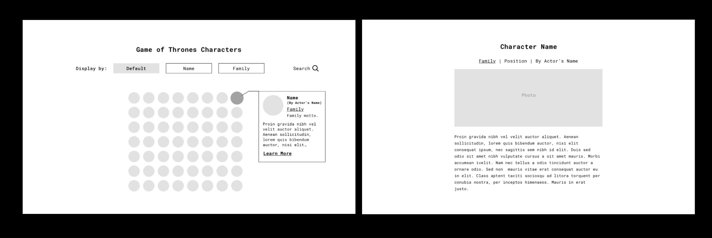
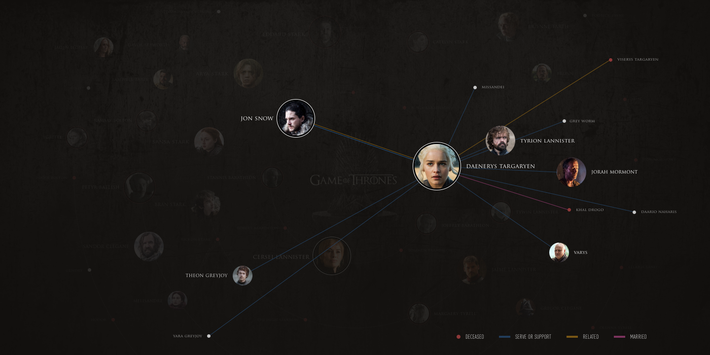
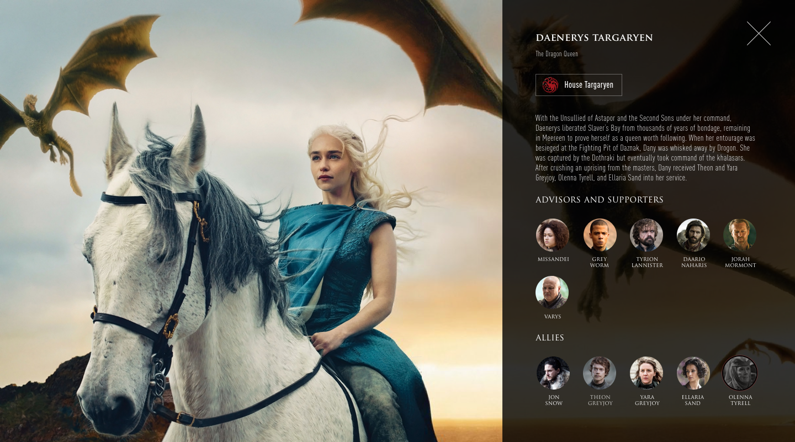
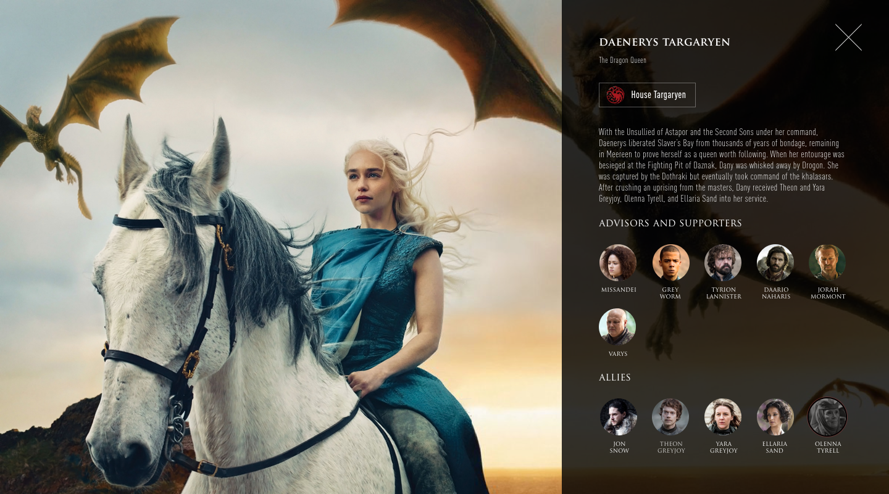

Find or create a collection of items. Viewers should be able to understand the primary objective of showing the archive, an overview of all materials in the collection, and individual pages with details about each item in the collection.
I am a big fan of Game of Trones but I find it really hard to remember the character names, families and the history between characters. So I decided to make a website displaying all the information about characters and families, and make it easier for fans to search and to understand.
To showcase the content and user flow.
Version 1
For version 1, I tried to label all the related characters at once, however, since there are so many characters and their relationships are complicated it ends up quite messy.
Version 2
For version 2, I tried a tidier layout by putting character photos around circles, the first circle includes all the people who declared themselves as kings or queens, the more important the character is, the closer he is to the center of the page. I'm happy with the layout of the homepage and the hover effect, but the detail pages look a bit boring. Also the relationship between characters varies through 7 seasons(thanks to Professor The's suggestion), so I decide to add seasons as another layer of this project.
Version 3
 

I chose season3 as another example and rearranged the charaters on the circles according to their importance in the season.
Code
I tried to use what I learned about html and css to build the homepage and add some animations, limited by time and programing skill, I only built the homepage of season7 and season3.
See It Online